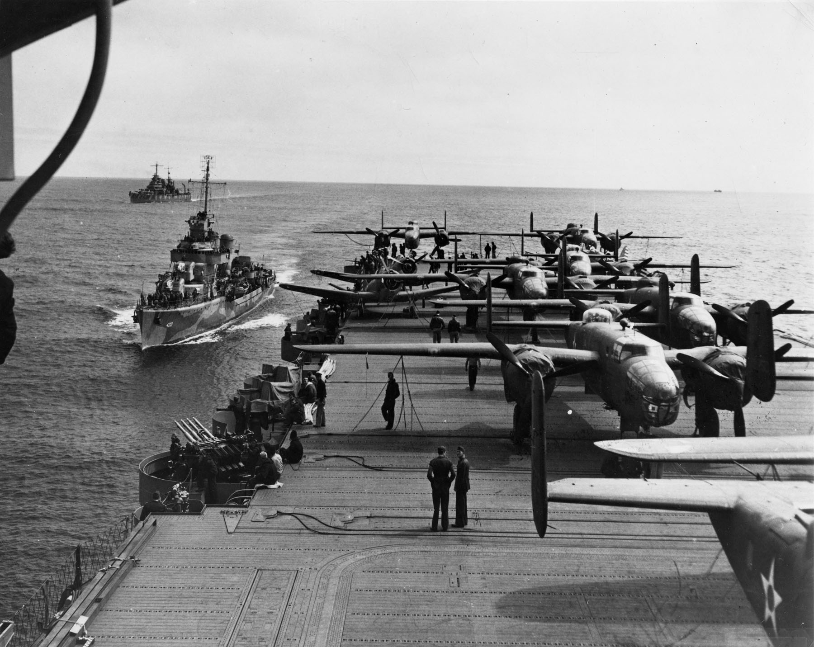
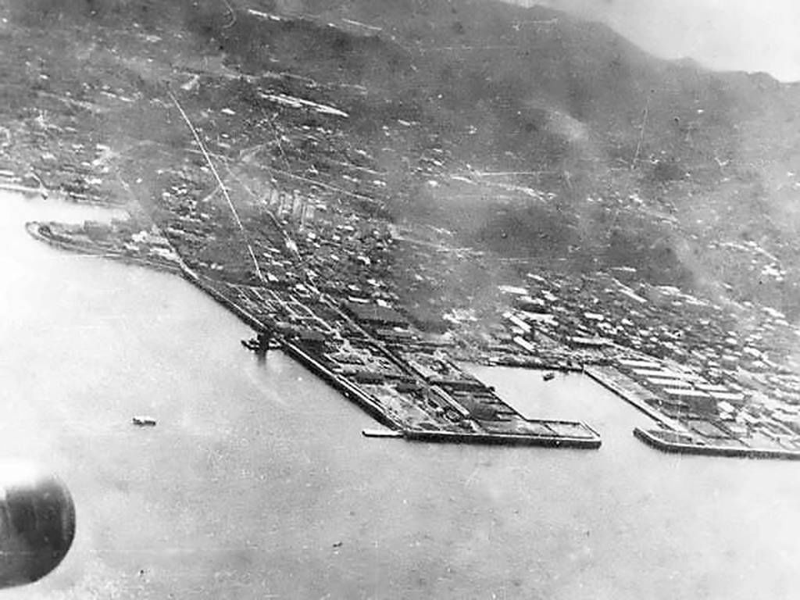
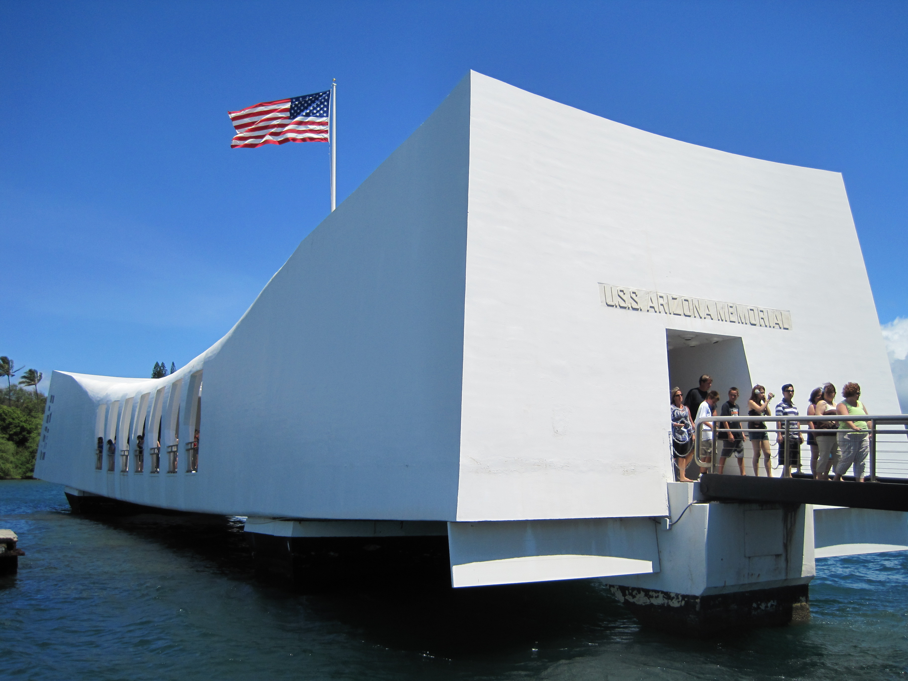
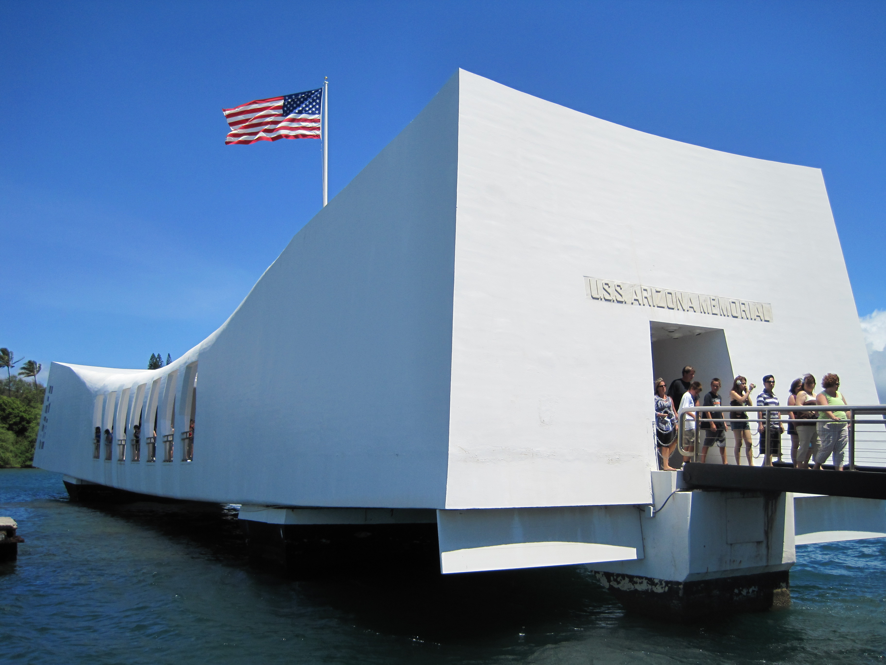

The Memory of Pearl Harbor
| Home - Home | Intro - Intro | Attack On Pearl Harbor - Attack On Pearl Harbor |
The Arizona - The Arizona |
Through out World War 2 those who fought the Japanese often thought back to what had happened at Pearl Harbor creating those wishing to avenge those lost.
Franklin Delano Roosevelt the president at the time of WW2 wished for a strike to be organized on the Japanese homeland which was to be a Japanese Pearl Harbor.
The Doolittle raid as it was named after the person who organized and carried out the raid was a group of medium bombers which would be taken off from carriers to bomb the city of Tokyo..


The strike was for the most part great for the US in reality causing minimal damage but morale was greatly impacted by this raid as bombs fell close to the Emperors palace the Japanese people knew they were no longer invincible.
Even today Americans still remember and pay respects to those who died at Pearl Harbor and memorials to those who sunk with their ships still exist at Pearl Harbor.
 

Pearl Harbor | Home - Home |
Intro - Intro |
Attack On Pearl Harbor - Attack On Pearl Harbor | The Arizona - The Arizona |
Pearl Harbor After Math - Pearl Harbor After Math |
All images and info gathered from Wikipedia.
Donate to veterans charities here - DAV